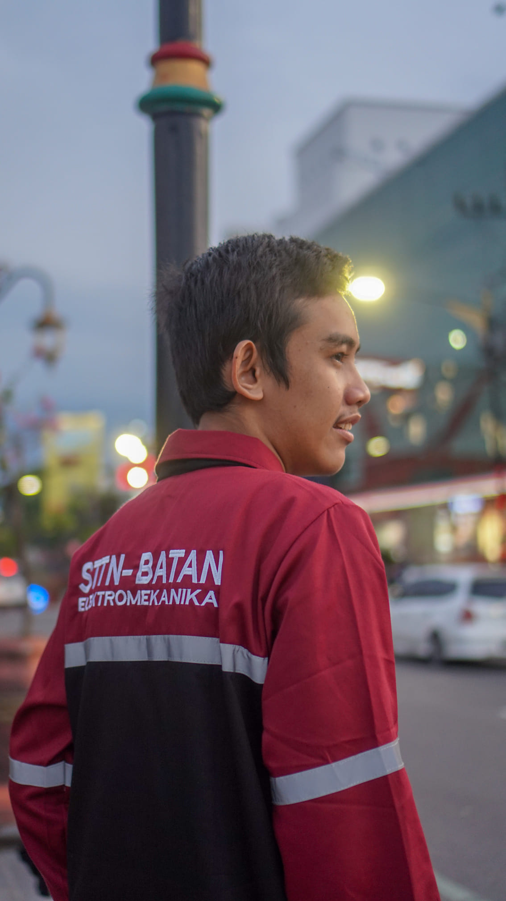

ARE YOU FINALLY READY TO
Build Better Products Across Web, QA, and Security
I help teams deliver clean web apps, reliable test flows, and practical security improvements without adding unnecessary complexity.
- Nama LengkapPrameswara Sesoca
- PendidikanSarjana Terapan Komputer - Rekayasa Keamanan Siber
IPK 3.77/4.00
- LokasiJakarta, Indonesia - Remote Available
- Emailprameswarasesoca@gmail.com
- LinkedInlinkedin.com/in/pramessesoca
02
Junior QA Engineer
Menyusun test case, melakukan pengujian manual end-to-end, mendokumentasikan bug secara sistematis, dan memastikan kualitas fitur sebelum rilis.
Test CaseBug ReportingRegression TestQuality Check